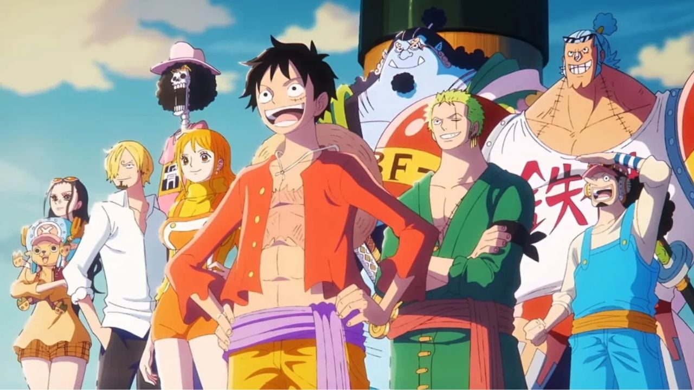
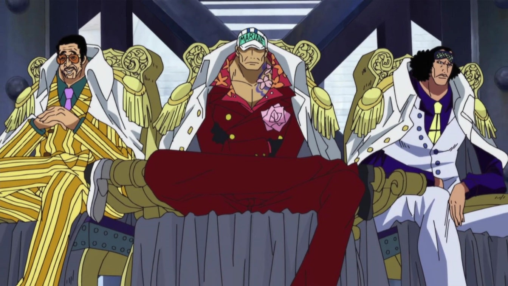
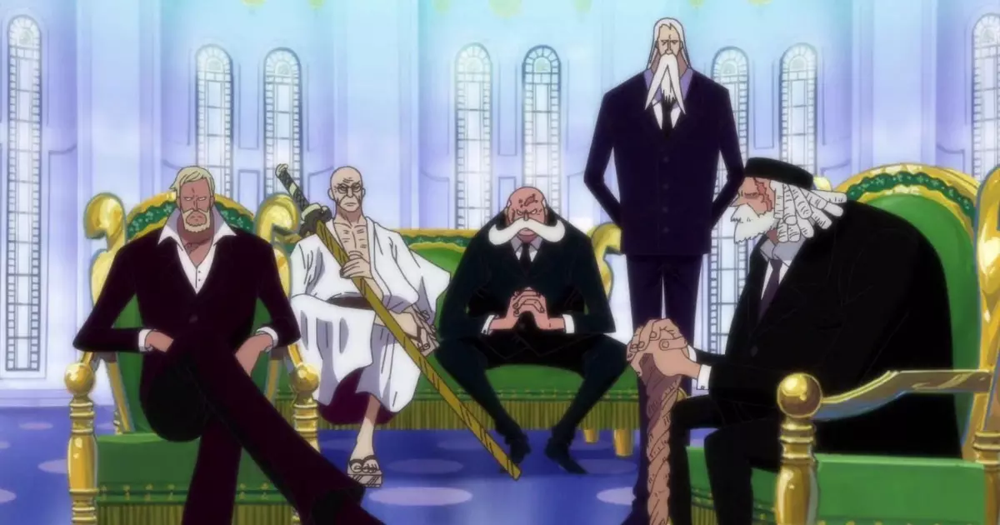
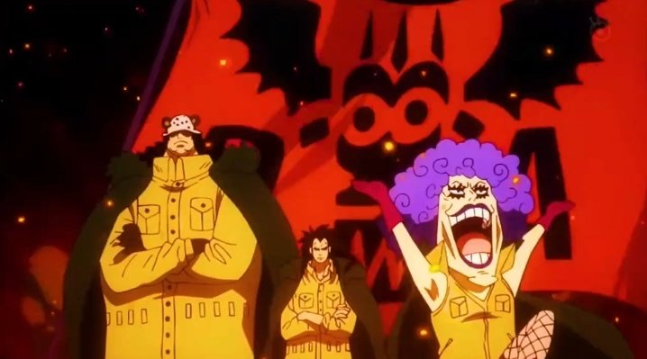
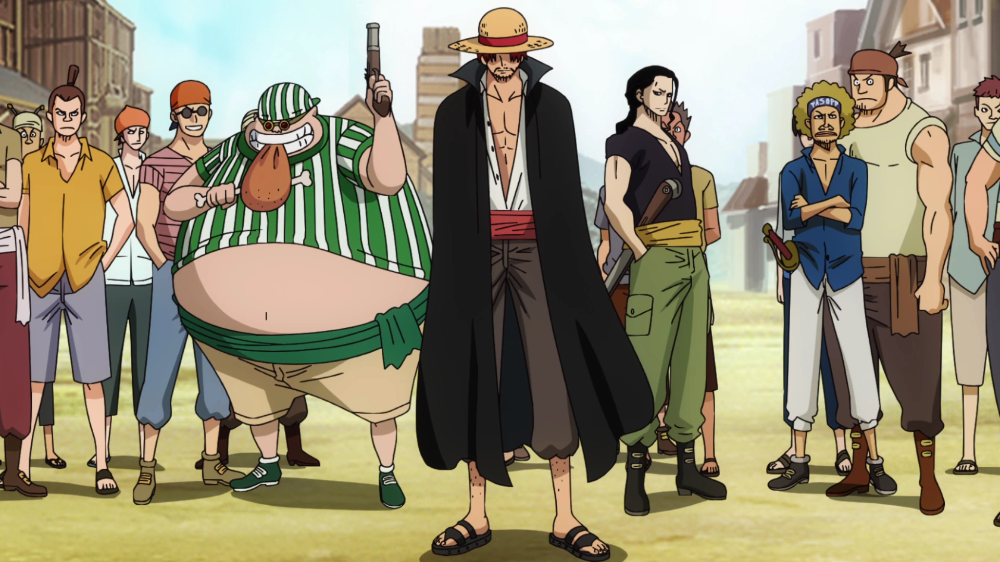

Conheça o Mundo do futuro Rei dos piratas
O jovem Monkey D. Luffy, um garoto sonhador que quer se tornar o Rei dos Piratas. Quando criança, ele comeu uma fruta misteriosa que deu ao seu corpo propriedades de borracha — em troca, perdeu a capacidade de nadar. Anos depois, Luffy parte sozinho em um pequeno barco pelo mar em busca do lendário tesouro chamado “One Piece”, deixado pelo antigo Rei dos Piratas. No caminho, ele começa a reunir companheiros com habilidades e objetivos próprios, formando uma tripulação muito improvável.
Quatro forças Principais
Principais Organizações de poderes no mundo de One piece

Marinha
A principal força militar e os executores da lei do Governo Mundial. Eles são encarregados de manter a ordem e erradicar a pirataria, operando sob diferentes ideologias de "Justiça" (como a Justiça Absoluta).

Governo Mundial
O império global que comanda mais de 170 nações, liderado nos bastidores por Imu e pelos Cinco Anciões (Gorosei).

Exército Revolucionário
Uma organização militar ilegal focada em derrubar o Governo Mundial e os corruptos Dragões Celestiais. Liderados por Monkey D. Dragon, eles libertam nações oprimidas e são considerados pelo governo a maior ameaça ao seu governo.

Piratas
Foras da lei que navegam pelos mares em busca de liberdade, tesouros ou poder. Alguns navegam por ambição e outros em busca de um objetivo.
Geografia do mundo de onepiece
O mundo de One Piece é um "Planeta Azul" coberto principalmente por oceanos, dividido por duas faixas perpendiculares: a Red Line (um continente de montanhas que corta o globo) e a Grand Line (uma perigosa rota marítima). Essa interseção cria quatro mares pacíficos: East, West, North e South Blue.